Covariance Functions¶
Covariance functions are a special choice of a multi-input single-output functions that are treated separately from common functions. A covariance function is a function:
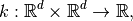
that is semi-positive definite. That is, for all 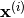 we have:
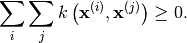
The best.maps.CovarianceFunction class¶
All covariance functions must inherit from best.maps.CovarianceFunction:
- class best.maps.CovarianceFunction¶
Inherits : best.Object A class representing a covariance function. This is any funciton 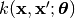. The parameters 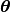 are parameters of the covariance function that can be set. Within the class documentation, we call them hyp (from hyper-parameters). The hyper-parameters should always be represented by a 1D numpy array.
- __init__(num_input[, num_hyp=0[, hyp=None[, k_wrapped=None[, name='Covariance Function']]]])¶
Initialize the object.
Parameters: - num_input (int) – The dimensionality of the input points.
- num_hyp (int) – The number of hyper-parameters of the covariance function. The default value is zero.
- hyp (1D numpy array) – A vector of hyper-parameters. If None, then the object stores no hyper-parameters and cannot be evaluated without providing a value for them. If set to a valid hyper-parameter object, then the object can be evaluated without any additional info.
- k_wrapped – A common python function defined by of two variables returning a real number. Ignored if None.
- name (str) – A name for the covariance function.
- num_input¶
Get the dimensionality of the input.
- k_wrapped¶
Get the wrapped function.
- is_wrapped¶
Return True if there is a wrapped function.
- hyp¶
Get/Set the hyper-parameters. If the hyper-parameters have not been set, then this returns None. You might want to check best.maps.CovarianceFunction.is_hyp_set() before calling this one.
- num_hyp¶
The number of hyper-parameters.
- __call__(x, y[, hyp=None])¶
Evaluate the covariance function at x and y.
Note : If hyp has already been set, then you do not have provide. If you do, then the value you have set should be ignored. If it is not set and you pass None, then it should throw a ValueError().
Parameters: - x (1D or 2D numpy array.) – Input points for x.
- y (1D or 2D numpy array.) – Input points for y.
- hyp (1D array.) – The hyper-parameters.
The return type depends on what x and y are. Let
 be
the dimension of x and y, respectively. Then the function
should return a 2D numpy array with shape 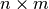 with:
be
the dimension of x and y, respectively. Then the function
should return a 2D numpy array with shape 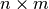 with: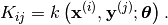
This is known as the cross covariance matrix of x and y. If x and y are the same, then it is semi-positive definite and it is known as the covariance matrix of x.
Warning
You do not have to overload this function when creating your own covariance function. However, doing so might yield a big performance gain. When you do so, you must conform with the types that must be returned for each special case of x and y.
- d(x, y[, hyp=None])¶
Evaluate the Jacobian of the cross covariance matrix with respect to the inputs.
Parameters as in best.maps.CovarianceFunction.__call__().
The return type depends on x and y. Let
be as before anb assume that the dimensionality of
the input is  . Then, this should
return a 3D numpy array with shape 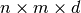
containing:
. Then, this should
return a 3D numpy array with shape 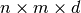
containing: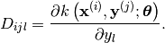
The same warning as in best.maps.CovarianceFunction.__call__() applies here in case you choose to overload it.
- d_hyp(x, y[, hyp=None])¶
Evaluate the Jacobian of the cross covariance matrix with respect to the hyper-parameters.
Parameters as in best.maps.CovarianceFunction.__call__().
The return type depends on x and y. Let
be as before anb assume that the dimensionality of
the hyper-parameters is  . Then, this should
return a 3D numpy array with shape 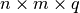
containing:
. Then, this should
return a 3D numpy array with shape 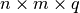
containing: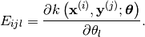
The same warning as in best.maps.CovarianceFunction.__call__() applies here in case you choose to overload it.
- _eval(x, y, hyp)¶
Evaluate the covariance function at two single inputs given hyp. This is the function that you can overload to access to the calculation of the cross covariance matrix.
- _d_eval(x, y, hyp)¶
Evaluate the Jacobian of the covariance function at two single inputs given hyp. The result should be a 1D numpy array of num_input elements. You can overloaded this to gain access to best.maps.CovarianceFunction.d().
- _d_hyp_eval(x, y, hyp)¶
Evaluate the Jacobian of the covariance function at two single inputs given hyp. The result should be a 1D numpy array of num_hyp elements. You can overload this to gain access to best.maps.CovarianceFunction.d_hyp().
- __mul__(g)¶
Return a new covariance function that is the product of the current one and g.
Parameters: g (best.maps.CovarianceFunction) – A covariance function.
- __add__(g)¶
Return a new covariance function that is the sum of the current one and g.
Parameters: g (best.maps.CovarianceFunction) – A covariance function.
- to_basis(X)¶
Return a basis object from a covariance function.
The parameters are as in best.maps.CovarianceFunctionBasis. See the documentation there for more details.
- _to_string(pad)¶
Overloads : best.Object._to_string()
Examples of Covariance Functions¶
Squared Exponential Covariance¶
The class best.maps.CovarianceFunctionSE implements a particular case of a best.maps.CovarianceFunction: the Squared Exponential (SE) covariance function:
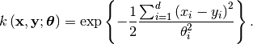
Let’s plot it in 1D:
import numpy as np
import matplotlib.pyplot as plt
from best.maps import CovarianceFunctionSE
k = CovarianceFunctionSE(1)
x = np.linspace(-5, 5, 100)
plt.plot(x, k(0, x, hyp=1).T)
You should see the following:
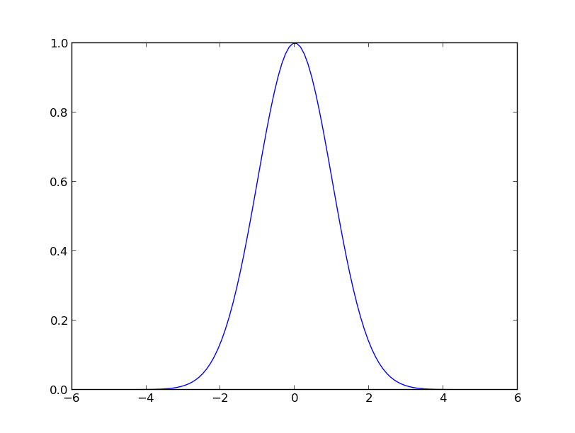Plot of 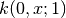.
Here is how you can get the derivative with respect to the input:
D = k.d(0, x, hyp=1.)
plt.plot(x, D[:, :, 0].T)
plt.show()
You should see:
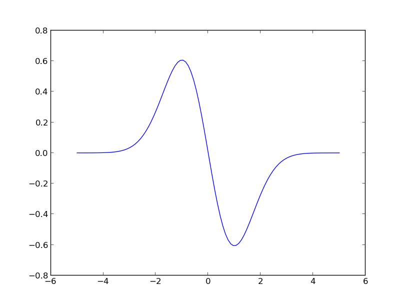Plot of 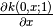.
Here is how you can get the derivative with respect to the hyper-parameters:
E = k.d_hyp(0, x, hyp=1.)
Constructing Basis from Covariance Functions¶
Given a covariance function 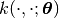, we
can construct a basis to be used in generalized linear models
(see best.maps.GeneralizedLinearModel).
All we need is a set of input points
 and we can get
a set of basis functions
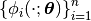
Here is how:
and we can get
a set of basis functions
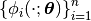
Here is how:
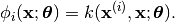
If the covariance function depends only on the distance between
 and
and  , it is known
as Radial Basis Function (RBF).
Usually the are the
observed input points. Such a basis can be used to train a
best.rvm.RelevanceVectorMachine or other types of
best.maps.GeneralizedLinearModel.
, it is known
as Radial Basis Function (RBF).
Usually the are the
observed input points. Such a basis can be used to train a
best.rvm.RelevanceVectorMachine or other types of
best.maps.GeneralizedLinearModel.
It is quite simple to construct this basis in Best. Let X be a 2D array of input points and k a covariance function. Then, you can construct the basis by:
phi = k.to_basis(X, hyp=1.)
Here is how this looks in the previous example for a random selection of 10 input points:
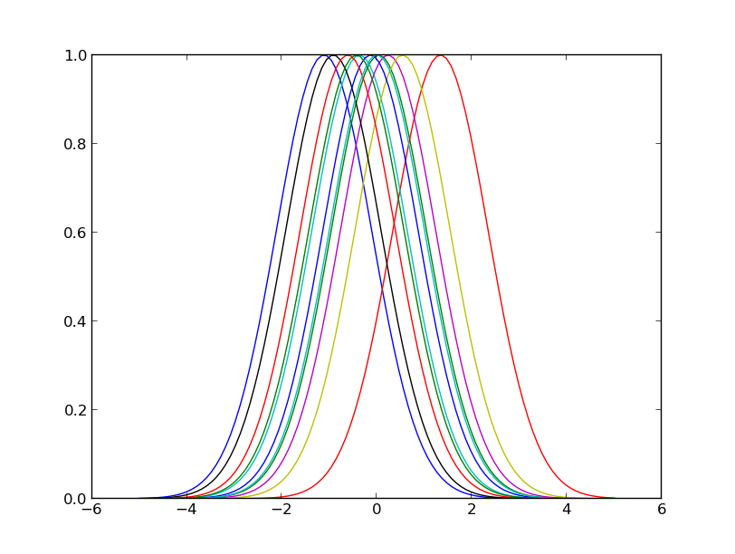Plot of the 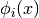 for the 1D example.
This functionality is offered via the following class:
- class best.maps.CovarianceFunctionBasis¶
Inherits : best.maps.Function Represents a basis constructed from a covariance function. The class inherits (as every basis) from best.maps.Function. So, there is no need to give here the complete documentation. Simply, use a function!
- __init__(k, X[, hyp=None])¶
Initializes the object.
Parameters: - k (best.maps.CovarianceFunction) – A covariance function.
- X (2D numpy array) – A collection of input points that serve as centers.
- hyp (1D numpy array) – A set of hyper-parameters that will remain fixed. If None, then we will copy the parameters that are already in k. We will throw an exception if we find nothing there.
- hyp¶
Get the hyper-parameters.
- cov¶
Get the underlying covariance function.
- X¶
Get the centers.
- _eval(x, hyp)¶
Overloads : best.maps.Function._eval()
- _d_eval(x, hyp)¶
Overloads : best.maps.Function._d_eval()
- _d_hyp_eval(x, hyp)¶
Overloads : best.maps.Function._d_hyp_eval()
- _to_string(pad)¶
Overloads : best.maps.Function._to_string()